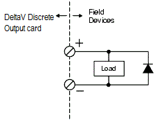
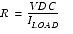
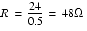
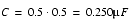
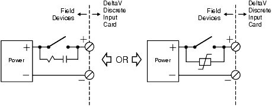

| Parameter | Specification |
|---|---|
| Nominal Voltage | 24 VDC |
| Operating Range | 21.6 to 26.4 VDC (24 VDC ±10%) |
| Connection Point | Top of the I/O interface carrier |
| Supported Power Sources | DeltaV Bulk Power Supply or Legacy Bulk Power Supply |
| Max Current (VerticalPLUS) | 13 A per carrier connection |
2. Bussed Field Power for DI and DO Cards
Special guidelines apply when implementing bussed field power for discrete input and output cards.
2.1 Discrete Input — Arc Suppression
When using DeltaV discrete input cards (isolated or dry contact) to sense a contact closure, an arc suppression device is required at the contact. Options include an R-C snubber or a varistor.
Example R-C Snubber Values (Table K-1):
| Load from Input Card | R Value | C Value |
|---|---|---|
| 24 VDC | 5 kΩ | 2.4 nF |
| 120 VAC | 60 Ω | 0.12 nF |
| 230 VAC | 115 Ω | 0.01 nF |
Reference: Sizing R-C Snubbers section for formulas.
2.2 Discrete Input — Solid State Devices (Triacs)
When sensing solid-state devices with isolated discrete input cards, place a resistor in parallel with the input to avoid false triggering due to leakage currents. Size the resistor so that the leakage current produces a voltage below the upper limit for OFF voltage.
Watts = V × V / Rwhere V = voltage, R = resistance. The resistor wattage must support this dissipation when the switch is ON.
2.3 Dry Contact Cards — OFF Current Limits (Table K-2)
Dry contact discrete input cards can sense solid-state devices only if switch leakage is below the upper OFF current limit:
| Input Card Voltage Level | Upper Limit of OFF Current |
|---|---|
| 24 VDC | 1 mA |
| 120 VAC | 0.56 mA |
| 230 VAC | 0.28 mA |
2.4 AC Discrete Output — Inductive Loads
When AC output cards (high-side or isolated) drive inductive loads (relay coils), suppress kickback at the coil using an R-C snubber or varistor. Sizing is load-dependent.
2.5 DC Discrete Output — Inductive Loads
When DC output cards drive inductive loads (solenoid valves, relay coils), place a reverse-biased diode (e.g., 1N4004) in parallel at the load. Benefits:
- Protects the output channel circuitry from inductive kickback in all configurations
- Suppresses electrical noise that would couple onto adjacent field wiring
2.6 Low-Current Loads on AC Output Cards
For field devices with low current requirements, connect a loading resistor in parallel to limit leakage current effects. Size for 10 mA total load:
| Voltage | Resistor Value | Power Rating |
|---|---|---|
| 120 VAC | 12 kΩ | 2 W |
| 230 VAC | 23 kΩ | 3 W |
2.7 Noisy Environments
In electrically noisy environments, place varistors at two locations:
- In parallel with the field terminal blocks at the I/O card
- In parallel with the bussed field power connection to the carrier
Size the varistor for 20% above the nominal line voltage.
3. Sizing R-C Snubbers
R-C snubbers suppress arcing when contacts open and kickback when coils de-energize. Pre-assembled units are available (Quencharc®, RIFA RC-units) or can be built from discrete components.
3.1 DC Applications
| Example | Source | Load |
|---|---|---|
| Typical DC sizing | 24 VDC | 0.5 A |
Always round up to the next available component value.
3.2 AC Applications
For AC, size at 0.1 µF for each 10 V·A of steady-state load.
| Example | Source | Load |
|---|---|---|
| Typical AC sizing | 120 VAC | 0.5 A (60 V·A → 0.6 µF) |
4. Controller Redundancy
The DeltaV system supports redundant controllers for high-availability applications. A redundant configuration requires two 2-wide carriers side by side, each with its own power supply and controller.
| Component | Specification |
|---|---|
| Control Network Cable | ScTP Cat. 5(e) |
| Maximum Cable Length | 100 m (330 ft) |
| Carrier Requirement | Two 2-wide carriers (must support redundancy) |
| Controller Matching | Both controllers must be the same type |
4.1 Installing a Redundant Controller
Step-by-step procedure:
| Step | Action | Indicator |
|---|---|---|
| 1 | Assign a redundancy license to the simplex controller in DeltaV Explorer | — |
| 2 | Plug in a second 2-wide carrier to the left of the current carrier. Verify correct pins and redundancy support. | — |
| 3 | Insert power supply in the left slot of the left carrier; connect power cord | Power LED on |
| 4 | Insert matching controller in the right slot of the left carrier | Error LED blinks briefly |
| 5 | Observe LED sequence: all 6 LEDs on for ~2 s, then all off except Power LED; Standby and communications LEDs begin blinking | Controller becomes commissioned |
| 6 | Download ProfessionalPLUS workstation in DeltaV Explorer | — |
| 7 | Download setup data to the controller; communications LEDs blink for a few minutes | Standby LED turns solid (configured and ready) |
4.2 Powering Redundant Controllers
A redundant system requires an additional 2-wide carrier for the second controller and power supply.
| Power Element | Source |
|---|---|
| Controller 1 | Power Supply 1 (5V and 3.3V) |
| Controller 2 | Power Supply 2 (5V and 3.3V) |
| I/O Cards | Both power supplies — load sharing (12V) |
5. Reference Summary
| Topic | Key Point |
|---|---|
| Bussed field power voltage | 24 VDC ±10% (21.6–26.4 VDC) |
| Arc suppression (DI) | R-C snubber or varistor required at contact |
| Inductive load suppression (DC DO) | Reverse-biased diode (1N4004) at load |
| Inductive load suppression (AC DO) | R-C snubber or varistor at coil |
| Noisy environment varistors | Size at 20% above nominal; place at I/O card and power connection |
| Controller redundancy | Requires license, matching controllers, separate 2-wide carriers |
| Standby LED solid | Indicates standby controller is configured and ready |
| Redundant power planning | Verify single power supply can sustain active controller + full I/O load |






Review Questions
1. What is the acceptable voltage range for bussed field power on DeltaV I/O cards?
21.6 to 26.4 VDC (24 VDC ±10%)
2. Why must an arc suppression device be installed when discrete input cards sense a contact closure?
To suppress arcing at the contact, preventing damage and false triggering. An R-C snubber or varistor is used.
3. What component protects DC output channel circuitry from inductive kickback when driving solenoid valves?
A reverse-biased diode (such as a 1N4004) connected in parallel at the load.
4. What does a solid Standby LED indicate after installing a redundant controller?
The standby controller has been successfully configured and is ready to take over if the active controller fails.
5. Why must the two controllers in a redundant pair be the same type?
Mismatched controllers cannot communicate properly on the redundancy bus and will not fail over correctly. The system requires identical hardware for seamless failover.